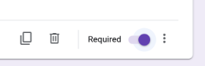
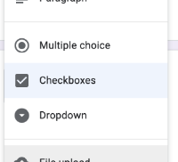
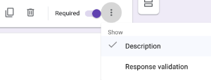
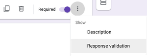
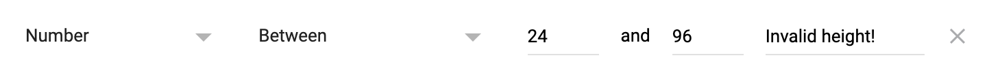

Collecting Data
Students learn about the importance of careful data collection, by confronting a "dirty" dataset. They then design a simple survey of their own, gather their data, and import it into Pyret
|
Lesson Goals |
Students will be able to…
|
|
Student-facing Lesson Goals |
|
|
Materials |
| When Data Gets Dirty! | 15 minutes |
Overview
Students analyze a "dirty" dataset to develop an understanding of why it’s important to have "clean" data.
Launch
There are lots of reasons to gather data:
-
A company might want to survey its customers to see if they are happy with the product.
-
We might want to gather data on plant growth to see whether a plant grows faster with a lot or a little sun.
-
The CDC might gather data on symptoms to see how serious a disease is
-
An airline could gather data on fuel usage to see which airplane routes are the most efficient.
-
We might want to gather data on our friends to see what’s stressing them out, or our classmates to see which teachers are the easiest!
Not all data is created equal. Only clean data can be properly processed and analyzed. But what does it mean for data to be clean? What does it mean for data to be dirty?_
Investigate
Humans make mistakes, and that can happen when we are collecting data or entering data. Either way, the result is dirty data. There is a lot of dirty data out there that Data Scientists have to deal with!
Let’s take a look at some dirty data.
-
Open the Survey of Eighth Graders and their Favorite Desserts Starter File.
-
Answer the questions on Analyzing Survey Results When Data is Dirty.
Synthesize
-
What were some ways that the data was "dirty"?
-
What ideas do you have for how the survey designers could have solicited better data?
Pedagogy Note! This could be an opportunity to have students practice cleaning data and importing a google sheet into a pyret starter file. If you want to take the time to have your students work on these skills and see the difference of what the file looks like cleaned up, have them make a copy of the google sheet, clean the data by hand, change the google file id in Survey of Eighth Graders and their Favorite Desserts Starter File, click "Run" and build the displays again to see how different they look with "clean" data. |
| Cleaning Data | 15 minutes |
Overview
Students analyze a sample dataset to consider the different ways that data can be dirty.
Launch
Sometimes data is so "dirty" that it can’t even be processed by tools like Pyret! Here are four ways that data can be dirty:
(1) Missing Data - A column containing some cells with data, but some cells left blank.
(2) Inconsistent Types - A column where some values have one data type and some cells have another. For example, a years column where almost every cell is a Number, but one cell contains the string "5 years old".
(3) Inconsistent Units - A column where the data types are the same, but they represent different units. For example, a weight column where some entries are in pounds but others are in kilograms.
(4) Inconsistent Naming - Inconsistent spelling and capitalization for entries lead to them being counted as different. For example, a species column where some entries are "cat" and others are "Cat" will not give us a full picture of the cats.
-
Open New Animals! and complete Dirty Data! in pairs or small groups.
Have students share their results when they are finished.
Investigate
Pyret is pretty smart, and does a lot of checking to make sure data is clean before analyzing it. But many tools - like Google Sheets, Microsoft Excel, etc. - don’t. Suppose you tried to analyze this data in a tool that doesn’t do all this checking…
-
What would happen if you tried to make a pie chart from a categorical column, but three of the cells were blank?
-
What would happen if you tried to take a histogram of a quantitative column, but half the cells were Strings instead of Numbers?
-
What would happen if you made a scatter plot examining
poundsv.weeks, but two of the cells in theweekscolumn were actually showing the days to adoption?
Sometimes, there’s an easy way to clean up the data. Chanel and Bibbles have String values for their weights, but we can easily change them to be numbers representing pounds.
But what if the data is missing, like the weight for our dogs? Or what if it’s weird data that we know is wrong but we don’t know how to fix it, like the time to adoption for Boss and Porche?
It’s never as simple as just deleting dirty rows!
Suppose we decided to delete all the rows with blank cells, removing Mona, Rover, Susie Q, and Happy. How might that bias our analysis? Removing all the dogs makes it look like this shelter doesn’t have any!
Suppose we decided to delete all the rows with weird data, having inconsistent types or units we don’t recognize? We could delete Boss and Porche, but how might that bias our analysis? Removing all the female lizards might affect the kind of food or habitat the shelter needs to buy!
Synthesize
These animal examples were a useful way to illustrate the problem, but dirty data shows up everywhere. Imagine a dataset about people in your town, which asks about height, religion, race, address, and job.
-
If unemployed people leave the
jobfield blank, why would it be a problem to delete those rows? -
Suppose the
heightfield is full of junk data. Some people leave it blank, some write their height in inches, some write it in centimeters, some write a combination like "5 feet, 9 inches" and others write "I’m taller than my brother." Can we just delete all those rows? -
Suppose the
racequestion had people choose from a list. What might happen to our data if the list left out an option for one group of people?
| Data Hygiene | 20 minutes |
Overview
Students open a google form survey containing "bad" questions. They identify why the questions are problematic, and then create a copy of the survey with their proposed fixes.
Launch
The way we ask questions - and check responses - plays a big role in how clean our data is.
It is often said that a person’s height is exactly the same as their "wingspan" (the length from fingertip to fingertip when their arms are outstretched). Suppose we want to test this for ourselves, by surveying students at a school.
Open Height vs. Wingspan Survey, so that students can see it on the projector, tv, or their own screens. This Google form was intentionally designed to gather bad data! Can you see anything wrong with it?
-
Complete Bad Questions Make Dirty Data in pairs or small groups.
While it’s almost impossible to guarantee 100% clean data, most survey tools include advanced options to help Data Scientists get data that is as clean possible. Here’s an overview of those tools:
-

🖼Show image Required Questions - By making a question "required", we can eliminate missing data and blank cells. Which questions on the survey should be required? -

🖼Show image Question Format - When you have a fixed number of categories, a dropdown can ensure that everyone selects one - and only one! - category. Questions A and C might be a good candidates for dropdowns. Question C is especially bad, because it allows respondents to select multiple grades! -

🖼Show image Descriptive Instructions - Sometimes it’s helpful to just add instructions! This can remind respondents to use inches instead of centimeters, for example, or give them extra guidance to answer accurately. -

🖼Show image Adding Validation - Most survey tools allow you to specify whether some data should be a number or a string, which helps guard against inconsistent types. Often, you can even specify parameters for the data as well, such as "strings that are email addresses", or "numbers between 24 and 96". Questions B and E would benefit from some validation.
🖼Show image
{kind=link}
{kind=link}
{kind=link}
{kind=link}
{kind=link}
Investigate
Make a copy of the bad survey, and work in pairs or small groups to fix it!
Have student share back what changes they made, and what they discussed.
Synthesize
-
Have you ever taken a survey, where the answer you want to give isn’t listed?
-
Have you ever taken a survey, where you just know the questions are going to result in bad data?
-
When someone conducts a survey and provides a dataset from it, is it important for them to share the survey? Why or why not?
-
When someone shares a dataset that they’ve cleaned or modified in some way, is it important for them to share their modifications? Why or why not?
Project Option: Designing a Survey In this project, students come up with a research question and Design a Survey to gather data to answer it. They exchange surveys and try to "hack" each other’s study with garbage data. Teachers can have their students import the resulting spreadsheets into Pyret, and analyze the data using the skills and concepts they’ve already learned. Finally, this project can also be used to support original data collection for the final research paper. |
🔗Additional Exercises
-
If you are interested in digging into the idea that there’s lots of important data that’s not being collected, we recommend reading The Census Won’t Collect L.G.B.T. Data. That’s a Problem (Nytimes) with your class.
These materials were developed partly through support of the National Science Foundation,
(awards 1042210, 1535276, 1648684, and 1738598).  Bootstrap by the Bootstrap Community is licensed under a Creative Commons 4.0 Unported License. This license does not grant permission to run training or professional development. Offering training or professional development with materials substantially derived from Bootstrap must be approved in writing by a Bootstrap Director. Permissions beyond the scope of this license, such as to run training, may be available by contacting contact@BootstrapWorld.org.
Bootstrap by the Bootstrap Community is licensed under a Creative Commons 4.0 Unported License. This license does not grant permission to run training or professional development. Offering training or professional development with materials substantially derived from Bootstrap must be approved in writing by a Bootstrap Director. Permissions beyond the scope of this license, such as to run training, may be available by contacting contact@BootstrapWorld.org.